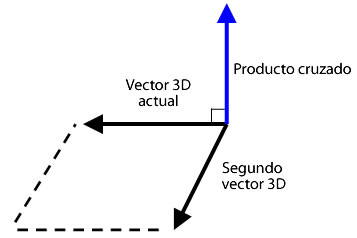

| Paquete | flash.geom |
| Clase | public class Vector3D |
| Herencia | Vector3D |
| Versión del lenguaje: | ActionScript 3.0 |
| Versiones de motor de ejecución: | Flash Player 10, AIR 1.5 |
x representa el eje horizontal y la propiedad y el vertical. En el espacio tridimensional, la propiedad z representa la profundidad. El valor de la propiedad x aumenta a medida que el objeto se desplaza hacia la derecha. El valor de la propiedad y se incrementa a medida que el objeto se mueve hacia abajo. La propiedad z se incrementa conforme el objeto se aleja del punto de vista. Mediante el uso de la proyección de perspectiva y la escala, el objeto se observa más grande cuando está cerca y más pequeño cuando se aleja de la pantalla. Como en un sistema de coordenadas tridimensional de mano derecha, el eje z positivo apunta en dirección contraria al espectador y el valor de la propiedad z se incrementa conforme el objeto se aleja del ojo del espectador. El punto de origen (0,0,0) del espacio global es la esquina superior izquierda del escenario.

La clase Vector3D también puede representar una dirección, una flecha que apunta desde el origen de las coordenadas como, por ejemplo, (0,0,0), hasta un punto final; o un componente de coma flotante de un modelo de color RGB (rojo, verde, azul).
La notación de cuaternión introduce un cuarto elemento, la propiedad w, que proporciona información adicional sobre la orientación. Por ejemplo, la propiedad w puede definir un ángulo de rotación de un objeto Vector3D. La combinación del ángulo de rotación y las coordenadas x, y y z puede determinar la orientación del objeto de visualización. A continuación, se muestra una representación de los elementos Vector3D en notación de matrices:

Elementos de API relacionados
 Ocultar propiedades públicas heredadas
Ocultar propiedades públicas heredadas Mostrar propiedades públicas heredadas
Mostrar propiedades públicas heredadas| Propiedad | Definido por | ||
|---|---|---|---|
 | constructor : Object
Una referencia a la clase de objeto o función constructora para una instancia de objeto determinada. | Object | |
| length : Number [solo lectura]
Longitud, magnitud, del objeto Vector3D actual desde el origen (0,0,0) hasta las coordenadas x, y y z del objeto. | Vector3D | ||
| lengthSquared : Number [solo lectura]
Cuadrado de la longitud del objeto Vector3D actual, calculado mediante las propiedades x, y y z. | Vector3D | ||
| w : Number
El cuarto elemento de un objeto Vector3D (además de las propiedades x, y y z) puede contener datos como, por ejemplo, el ángulo de rotación. | Vector3D | ||
| x : Number
El primer elemento de un objeto Vector3D como, por ejemplo, la coordenada x de un punto en el espacio tridimensional. | Vector3D | ||
| y : Number
El segundo elemento de un objeto Vector3D como, por ejemplo, la coordenada y de un punto en el espacio tridimensional. | Vector3D | ||
| z : Number
El tercer elemento de un objeto Vector3D como, por ejemplo, la coordenada z de un punto en el espacio tridimensional. | Vector3D | ||
| Método | Definido por | ||
|---|---|---|---|
Crea una instancia de un objeto Vector3D. | Vector3D | ||
Añade el valor de los elementos x, y y z del objeto Vector3D actual a los valores de los elementos x, y y z de otro objeto Vector3D. | Vector3D | ||
[estática]
Devuelve el ángulo en radianes entre dos vectores. | Vector3D | ||
Devuelve un nuevo objeto Vector3D que es una copia exacta del objeto Vector3D actual. | Vector3D | ||
Copia todos datos vectoriales desde el objeto Vector3D de origen en objeto Vector3D de llamada. | Vector3D | ||
Devuelve un nuevo objeto Vector3D que es perpendicular (en un ángulo derecho) al objeto Vector3D actual y a otro. | Vector3D | ||
Disminuye el valor de los elementos x, y y z del objeto Vector3D actual por los valores de los elementos x, y y z de un objeto Vector3D especificado. | Vector3D | ||
[estática]
Devuelve la distancia entre dos objetos Vector3D. | Vector3D | ||
Si el objeto Vector3D actual y el que se especificó como el parámetro son vértices de unidad, este método devuelve el coseno del ángulo entre los dos vértices. | Vector3D | ||
Determina si dos objetos Vector3D son iguales comparando los elementos x, y y z del objeto Vector3D actual con otro especificado. | Vector3D | ||
|
Indica si un objeto tiene definida una propiedad especificada. | Object | |
Incrementa el valor de los elementos x, y y z del objeto Vector3D actual por los valores de los elementos x, y y z de un objeto Vector3D especificado. | Vector3D | ||
|
Indica si hay una instancia de la clase Object en la cadena de prototipo del objeto especificado como parámetro. | Object | |
Compara los elementos del objeto Vector3D actual con los elementos de un objeto Vector3D especificado para determinar si son aproximadamente iguales. | Vector3D | ||
Establece el objeto Vector3D actual en su inverso. | Vector3D | ||
Convierte un objeto Vector3D en un vector de unidad mediante la división de los tres primeros elementos (x, y, z) por la longitud del vector. | Vector3D | ||
Divide el valor de las propiedades x, y y z del objeto Vector3D actual por el valor de su propiedad w. | Vector3D | ||
|
Indica si existe la propiedad especificada y si es enumerable. | Object | |
Escala el objeto Vector3D actual por un escalar, una magnitud. | Vector3D | ||
|
Establece la disponibilidad de una propiedad dinámica para operaciones de bucle. | Object | |
Define los miembros de Vector3D para los valores especificados
| Vector3D | ||
Resta el valor de los elementos x, y y z del objeto Vector3D actual de los valores de los elementos x, y y z de otro objeto Vector3D. | Vector3D | ||
|
Devuelve la representación de cadena de este objeto, con formato según las convenciones específicas de configuración regional. | Object | |
Devuelve la representación de una cadena del objeto Vector3D actual. | Vector3D | ||
|
Devuelve el valor simple del objeto especificado. | Object | |
| Constante | Definido por | ||
|---|---|---|---|
| X_AXIS : Vector3D [estática]
Eje x definido como un objeto Vector3D con coordenadas (1,0,0). | Vector3D | ||
| Y_AXIS : Vector3D [estática]
Eje y definido como un objeto Vector3D con coordenadas (0,1,0). | Vector3D | ||
| Z_AXIS : Vector3D [estática]
Eje z definido como un objeto Vector3D con coordenadas (0,0,1). | Vector3D | ||
length | propiedad |
length:Number [solo lectura] | Versión del lenguaje: | ActionScript 3.0 |
| Versiones de motor de ejecución: | Flash Player 10, AIR 1.5 |
Longitud, magnitud, del objeto Vector3D actual desde el origen (0,0,0) hasta las coordenadas x, y y z del objeto. Se omite la propiedad w. Un vector de unidad tiene una longitud o magnitud de uno.
Implementación
public function get length():NumberElementos de API relacionados
lengthSquared | propiedad |
lengthSquared:Number [solo lectura] | Versión del lenguaje: | ActionScript 3.0 |
| Versiones de motor de ejecución: | Flash Player 10, AIR 1.5 |
Cuadrado de la longitud del objeto Vector3D actual, calculado mediante las propiedades x, y y z. Se omite la propiedad w. Utilice el método lengthSquared() cuando sea posible en lugar de llamar al método Vector3D.length() con el método Math.sqrt(), que es un procedimiento más lento.
Implementación
public function get lengthSquared():NumberElementos de API relacionados
w | propiedad |
public var w:Number| Versión del lenguaje: | ActionScript 3.0 |
| Versiones de motor de ejecución: | Flash Player 10, AIR 1.5 |
El cuarto elemento de un objeto Vector3D (además de las propiedades x, y y z) puede contener datos como, por ejemplo, el ángulo de rotación. El valor predeterminado es 0.
La notación en cuaternión emplea un ángulo como el cuarto elemento en el cálculo de la rotación tridimensional. Se puede utilizar la propiedad w para definir el ángulo de rotación sobre el objeto Vector3D. La combinación del ángulo de rotación y las coordenadas (x,y,z) determina la orientación del objeto de visualización.
Además, se puede utilizar la propiedad w como un factor de deformación de perspectiva para una posición tridimensional proyectada o como un valor de transformación de perspectiva en la representación de una coordenada tridimensional proyectada en el espacio bidimensional. Por ejemplo, puede crear una matriz de proyección mediante la propiedad Matrix3D.rawData, que, cuando se aplica a un objeto Vector3D, produce un valor de transformación en el cuarto elemento del objeto Vector3D (la propiedad w). La división de los otros elementos del objeto Vector3D por el valor de transformación produce un objeto Vector3D proyectado. Puede utilizar el método Vector3D.project() para dividir los tres primeros elementos de un objeto Vector3D por el cuarto elemento.
Elementos de API relacionados
x | propiedad |
public var x:Number| Versión del lenguaje: | ActionScript 3.0 |
| Versiones de motor de ejecución: | Flash Player 10, AIR 1.5 |
El primer elemento de un objeto Vector3D como, por ejemplo, la coordenada x de un punto en el espacio tridimensional. El valor predeterminado es 0.
y | propiedad |
public var y:Number| Versión del lenguaje: | ActionScript 3.0 |
| Versiones de motor de ejecución: | Flash Player 10, AIR 1.5 |
El segundo elemento de un objeto Vector3D como, por ejemplo, la coordenada y de un punto en el espacio tridimensional. El valor predeterminado es 0.
z | propiedad |
public var z:Number| Versión del lenguaje: | ActionScript 3.0 |
| Versiones de motor de ejecución: | Flash Player 10, AIR 1.5 |
El tercer elemento de un objeto Vector3D como, por ejemplo, la coordenada z de un punto en el espacio tridimensional. El valor predeterminado es 0.
Vector3D | () | Información sobre |
public function Vector3D(x:Number = 0., y:Number = 0., z:Number = 0., w:Number = 0.)| Versión del lenguaje: | ActionScript 3.0 |
| Versiones de motor de ejecución: | Flash Player 10, AIR 1.5 |
Crea una instancia de un objeto Vector3D. Si no especifica un parámetro para el constructor, se crea un objeto Vector3D con los elementos (0,0,0,0).
Parámetrosx:Number (default = 0.) | |
y:Number (default = 0.) | |
z:Number (default = 0.) | |
w:Number (default = 0.) |
add | () | método |
public function add(a:Vector3D):Vector3D| Versión del lenguaje: | ActionScript 3.0 |
| Versiones de motor de ejecución: | Flash Player 10, AIR 1.5 |
Añade el valor de los elementos x, y y z del objeto Vector3D actual a los valores de los elementos x, y y z de otro objeto Vector3D. El método add() no cambia el objeto Vector3D actual. En lugar de ello, devuelve un nuevo objeto Vector3D con los nuevos valores.
El resultado de sumar dos vectores se denomina vector resultante. Una forma de visualizar el resultado consiste en dibujar un vector desde el origen o la cola hasta el final o la cabeza del segundo vector. El vector resultante es la distancia entre el punto de origen del primer vector y el punto final del segundo vector.

Parámetros
a:Vector3D — Objeto Vector3D que se añadirá al objeto Vector3D actual.
|
Vector3D — Objeto Vector3D que se obtiene como resultado de añadir el objeto Vector3D actual a otro objeto Vector3D.
|
Elementos de API relacionados
angleBetween | () | método |
public static function angleBetween(a:Vector3D, b:Vector3D):Number| Versión del lenguaje: | ActionScript 3.0 |
| Versiones de motor de ejecución: | Flash Player 10, AIR 1.5 |
Devuelve el ángulo en radianes entre dos vectores. El ángulo devuelto es el menor radián que el primer objeto Vector3D rota hasta que se alinea con el segundo objeto Vector3D.
El método angleBetween() es estático. Puede utilizarlo directamente como un método de la clase Vector3D.
Para convertir un grado en un radián puede usar la fórmula siguiente:
radián = Math.PI/180 * grado
Parámetros
a:Vector3D — Primer objeto Vector3D.
| |
b:Vector3D — Segundo objeto Vector3D.
|
Number — Ángulo entre dos objetos Vector3D.
|
clone | () | método |
public function clone():Vector3D| Versión del lenguaje: | ActionScript 3.0 |
| Versiones de motor de ejecución: | Flash Player 10, AIR 1.5 |
Devuelve un nuevo objeto Vector3D que es una copia exacta del objeto Vector3D actual.
Valor devueltoVector3D — Nuevo objeto Vector3D que es una copia del objeto Vector3D actual.
|
copyFrom | () | método |
public function copyFrom(sourceVector3D:Vector3D):void| Versión del lenguaje: | ActionScript 3.0 |
| Versiones de motor de ejecución: | Flash Player 11, AIR 3.0, Flash Lite 4 |
Copia todos datos vectoriales desde el objeto Vector3D de origen en objeto Vector3D de llamada.
Parámetros
sourceVector3D:Vector3D — El objeto Vector3D desde el que se van a copiar los datos.
|
crossProduct | () | método |
public function crossProduct(a:Vector3D):Vector3D| Versión del lenguaje: | ActionScript 3.0 |
| Versiones de motor de ejecución: | Flash Player 10, AIR 1.5 |
Devuelve un nuevo objeto Vector3D que es perpendicular (en un ángulo derecho) al objeto Vector3D actual y a otro. Si las coordenadas del objeto Vector3D devuelto son (0,0,0), los dos objetos Vector3D son paralelos entre sí.

Puede utilizar el producto cruzado normalizado de dos vértices de una superficie de polígono con el vector normalizado del punto de vista de la cámara o el ojo para obtener un producto de punto. El valor del producto de punto puede identificar si una superficie de un objeto tridimensional está oculta para el punto de vista.
Parámetros
a:Vector3D — Segundo objeto Vector3D.
|
Vector3D — Un nuevo objeto Vector3D que es perpendicular al objeto Vector3D actual y al que se ha especificado como el parámetro.
|
Elementos de API relacionados
decrementBy | () | método |
public function decrementBy(a:Vector3D):void| Versión del lenguaje: | ActionScript 3.0 |
| Versiones de motor de ejecución: | Flash Player 10, AIR 1.5 |
Disminuye el valor de los elementos x, y y z del objeto Vector3D actual por los valores de los elementos x, y y z de un objeto Vector3D especificado. A diferencia del método Vector3D.subtract(), el método decrementBy() cambia el objeto Vector3D actual y no devuelve un nuevo objeto Vector3D.
Parámetros
a:Vector3D — Objeto Vector3D que contiene los valores que se deben restar del objeto Vector3D actual.
|
Elementos de API relacionados
distance | () | método |
public static function distance(pt1:Vector3D, pt2:Vector3D):Number| Versión del lenguaje: | ActionScript 3.0 |
| Versiones de motor de ejecución: | Flash Player 10, AIR 1.5 |
Devuelve la distancia entre dos objetos Vector3D. El método distance() es estático. Puede utilizarlo directamente como un método de la clase Vector3D para obtener la distancia euclideana entre dos puntos tridimensionales.
Parámetros
pt1:Vector3D — Un objeto Vector3D como el primer punto tridimensional.
| |
pt2:Vector3D — Un objeto Vector3D como el segundo punto tridimensional.
|
Number — Distancia entre dos objetos Vector3D.
|
dotProduct | () | método |
public function dotProduct(a:Vector3D):Number| Versión del lenguaje: | ActionScript 3.0 |
| Versiones de motor de ejecución: | Flash Player 10, AIR 1.5 |
Si el objeto Vector3D actual y el que se especificó como el parámetro son vértices de unidad, este método devuelve el coseno del ángulo entre los dos vértices. Los vértices de unidad son vértices que apuntan en la misma dirección, pero cuya longitud es uno. Eliminan la longitud del vector como un factor en el resultado. Puede utilizar el método normalize() para convertir un vector en un vector de unidad.
El método dotProduct() encuentra el ángulo entre dos vértices. También se utiliza en cálculos de iluminación o detección de caras posteriores. La detección de caras posteriores es un procedimiento para determinar qué superficies están ocultas para el punto de vista. Puede utilizar los vértices normalizados del punto de vista de la cámara, o del ojo, y el producto cruzado de los vértices de una superficie de polígono para obtener el producto de punto. Si el producto de punto es inferior a cero, la superficie mira hacia la cámara o el espectador. Si los dos vértices de unidad son perpendiculares entre sí, son ortogonales y el producto de punto es cero. Si los dos vértices son paralelos entre sí, el producto de punto es uno.
Parámetros
a:Vector3D — Segundo objeto Vector3D.
|
Number — Escalar que es el producto de punto del objeto Vector3D actual y el objeto Vector3D especificado.
|
Elementos de API relacionados
equals | () | método |
public function equals(toCompare:Vector3D, allFour:Boolean = false):Boolean| Versión del lenguaje: | ActionScript 3.0 |
| Versiones de motor de ejecución: | Flash Player 10, AIR 1.5 |
Determina si dos objetos Vector3D son iguales comparando los elementos x, y y z del objeto Vector3D actual con otro especificado. Si los valores de estos elementos son iguales, los dos objetos Vector3D también lo son. Si el segundo parámetro opcional se establece en true, se comparan los cuatro elementos de los objetos Vector3D, incluida la propiedad w.
Parámetros
toCompare:Vector3D — Objeto Vector3D que se comparará con el objeto Vector3D actual.
| |
allFour:Boolean (default = false)w de los objetos Vector3D se utiliza en la comparación.
|
Boolean — Valor true si el objeto Vector3D especificado es igual al actual; false si no es igual.
|
Elementos de API relacionados
incrementBy | () | método |
public function incrementBy(a:Vector3D):void| Versión del lenguaje: | ActionScript 3.0 |
| Versiones de motor de ejecución: | Flash Player 10, AIR 1.5 |
Incrementa el valor de los elementos x, y y z del objeto Vector3D actual por los valores de los elementos x, y y z de un objeto Vector3D especificado. A diferencia del método Vector3D.add(), el método incrementBy() cambia el objeto Vector3D actual y no devuelve un nuevo objeto Vector3D.
Parámetros
a:Vector3D — Objeto Vector3D que se añadirá al objeto Vector3D actual.
|
Elementos de API relacionados
nearEquals | () | método |
public function nearEquals(toCompare:Vector3D, tolerance:Number, allFour:Boolean = false):Boolean| Versión del lenguaje: | ActionScript 3.0 |
| Versiones de motor de ejecución: | Flash Player 10, AIR 1.5 |
Compara los elementos del objeto Vector3D actual con los elementos de un objeto Vector3D especificado para determinar si son aproximadamente iguales. Los dos objetos Vector3D son aproximadamente iguales si el valor de todos los elementos de los dos vértices son iguales o si el resultado de la comparación se encuentra dentro del intervalo de tolerancia. La diferencia entre dos elementos debe ser inferior al número especificado como el parámetro de tolerancia. Si el tercer parámetro opcional se establece en true, se comparan los cuatro elementos de los objetos Vector3D, incluida la propiedad w. De lo contrario, sólo se incluyen en la comparación los elementos x, y y z.
Parámetros
toCompare:Vector3D — Objeto Vector3D que se comparará con el objeto Vector3D actual.
| |
tolerance:Number — Número que determina el factor de tolerancia. Si la diferencia entre los valores del elemento Vector3D especificado en el parámetro toCompare y el elemento Vector3D actual es inferior al número de tolerancia, los dos valores se consideran aproximadamente iguales.
| |
allFour:Boolean (default = false)w de los objetos Vector3D se utiliza en la comparación.
|
Boolean — Valor true si el objeto Vector3D especificado es aproximadamente igual al actual; false si no es igual.
|
Elementos de API relacionados
negate | () | método |
public function negate():void| Versión del lenguaje: | ActionScript 3.0 |
| Versiones de motor de ejecución: | Flash Player 10, AIR 1.5 |
Establece el objeto Vector3D actual en su inverso. El objeto inverso también se considera el opuesto al objeto original. El valor de las propiedades x, y y z del objeto Vector3D actual cambia a -x, -y y -z.
normalize | () | método |
public function normalize():Number| Versión del lenguaje: | ActionScript 3.0 |
| Versiones de motor de ejecución: | Flash Player 10, AIR 1.5 |
Convierte un objeto Vector3D en un vector de unidad mediante la división de los tres primeros elementos (x, y, z) por la longitud del vector. Los vértices de unidad tienen una dirección, pero su longitud es uno. Simplifican los cálculos de vector al eliminar la longitud como factor.
Valor devueltoNumber — Longitud del objeto Vector3D actual.
|
project | () | método |
public function project():void| Versión del lenguaje: | ActionScript 3.0 |
| Versiones de motor de ejecución: | Flash Player 10, AIR 1.5 |
Divide el valor de las propiedades x, y y z del objeto Vector3D actual por el valor de su propiedad w.
Si el objeto Vector3D actual es el resultado de multiplicar un objeto Vector3D por un objeto Matrix3D de proyección, la propiedad w puede mantener el valor de la transformación. A continuación, el método project() puede completar la proyección dividiendo los elementos por la propiedad w. Utilice la propiedad Matrix3D.rawData para crear un objeto Matrix3D de proyección.
scaleBy | () | método |
public function scaleBy(s:Number):void| Versión del lenguaje: | ActionScript 3.0 |
| Versiones de motor de ejecución: | Flash Player 10, AIR 1.5 |
Escala el objeto Vector3D actual por un escalar, una magnitud. Los elementos x, y y z del objeto Vector3D se multiplican por el número escalar especificado en el parámetro. Por ejemplo, si el vector se escala por diez, el resultado es un vector diez veces más largo. El escalar también puede cambiar la dirección del vector. Al multiplicar el vector por un número negativo se invierte su dirección.
Parámetros
s:Number — Multiplicador (escalar) utilizado para escalar un objeto Vector3D.
|
setTo | () | método |
public function setTo(xa:Number, ya:Number, za:Number):void| Versión del lenguaje: | ActionScript 3.0 |
| Versiones de motor de ejecución: | Flash Player 11, AIR 3.0, Flash Lite 4 |
Define los miembros de Vector3D para los valores especificados
Parámetros
xa:Number — los valores para definir el vector.
| |
ya:Number | |
za:Number |
subtract | () | método |
public function subtract(a:Vector3D):Vector3D| Versión del lenguaje: | ActionScript 3.0 |
| Versiones de motor de ejecución: | Flash Player 10, AIR 1.5 |
Resta el valor de los elementos x, y y z del objeto Vector3D actual de los valores de los elementos x, y y z de otro objeto Vector3D. El método subtract() no cambia el objeto Vector3D actual. En lugar de ello, devuelve un nuevo objeto Vector3D con los nuevos valores.
Parámetros
a:Vector3D — Objeto Vector3D que se restará del objeto Vector3D actual.
|
Vector3D — Nuevo objeto Vector3D que resulta de la diferencia entre el objeto Vector3D actual y el especificado.
|
Elementos de API relacionados
toString | () | método |
public function toString():String| Versión del lenguaje: | ActionScript 3.0 |
| Versiones de motor de ejecución: | Flash Player 10, AIR 1.5 |
Devuelve la representación de una cadena del objeto Vector3D actual. La cadena contiene los valores de las propiedades x, y y z.
String — Cadena que contiene los valores de las propiedades x, y y z.
|
X_AXIS | Constante |
public static const X_AXIS:Vector3D| Versión del lenguaje: | ActionScript 3.0 |
| Versiones de motor de ejecución: | Flash Player 10, AIR 1.5 |
Eje x definido como un objeto Vector3D con coordenadas (1,0,0).
Y_AXIS | Constante |
public static const Y_AXIS:Vector3D| Versión del lenguaje: | ActionScript 3.0 |
| Versiones de motor de ejecución: | Flash Player 10, AIR 1.5 |
Eje y definido como un objeto Vector3D con coordenadas (0,1,0).
Z_AXIS | Constante |
public static const Z_AXIS:Vector3D| Versión del lenguaje: | ActionScript 3.0 |
| Versiones de motor de ejecución: | Flash Player 10, AIR 1.5 |
Eje z definido como un objeto Vector3D con coordenadas (0,0,1).
Tue Jun 12 2018, 02:12 PM Z